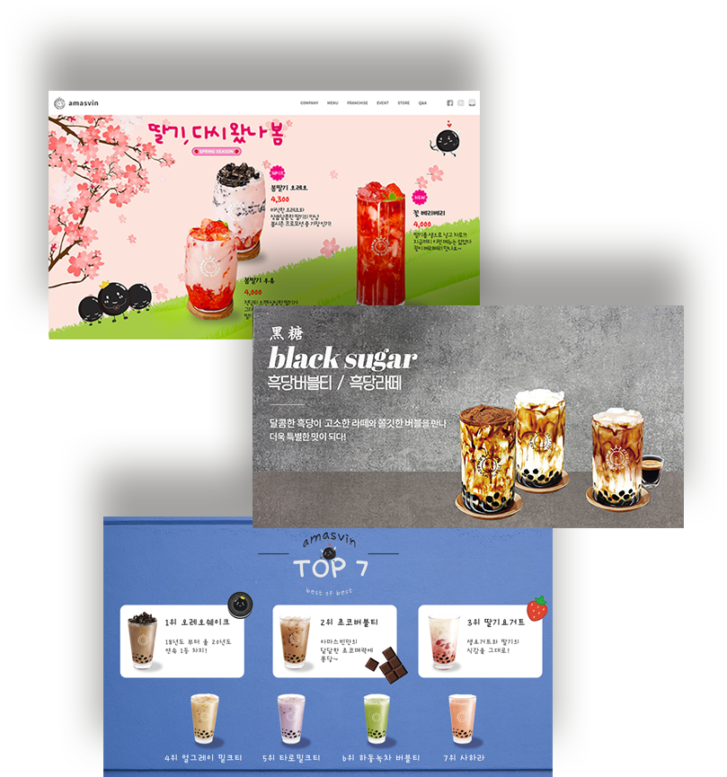

직장인 엄마,「워킹맘」
INFOGRAPHIC
워킹맘이란 단어에 대해 생소한 사람도 한눈에 알아볼 수 있는 일러스트와 아이콘을 만들고자 노력했고 순간 보아도 수치와 통계, 분포가 한눈에 들어올 수 있게 하고자 했습니다.
날씨어플
UIUX DESIGN
일러스트를 사용해 친근한 느낌과 한눈에 날씨를 느껴볼 수 있게 하고싶었고, 다른지역의 날씨는 슬라이드 형식으로 넘겨서 손쉽게 볼 수 있도록했습니다. 일러스트는 직접 일러스트레이터를 사용해 그려보았습니다.

아마스빈 [CAFE]
BANNER
스무살 때부터 3년 내내 아르바이트를 해오던 가게인데,sns만 활발하지 사이트는 오랫동안 유지보수가 안되어 있어 처음으로 배너 제작과 사이트 리디자인에 도전해 보았습니다.
샤넬 CHANNEL
REDESIGN
샤넬 향수의 우아하고 고풍스러운 느낌을 최대한 살리고 싶어서 꽃과 함께 배치해 배너를 제작하였고 기존 사이트에는 샤넬의 대표적인 컨텐츠들이 부족해 광고, sns, 대표 상품들의 노출과 샤넬의 첫 향수인 no.5에 대한 설명을 추가해 리디자인 하였습니다.
대전서구보건소
REDESIGN
기존사이트에서는 공지사항과 뉴스등이 따로따로 배치되어 있었는데, 하나의 탭메뉴로 합쳐서 한눈에 보기쉽게 하였고, 고객의 니즈인 진료시간에 대한 정보가 없어 추가했으며, 좁던 메인을 꽉채워 배치해주고 색감을 블루로 지정해 시원시원하게 리디자인했습니다.